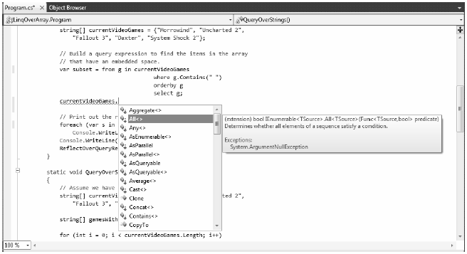
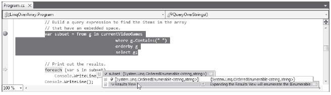

To begin examining LINQ to Objects, let’s build an application that will apply LINQ queries to various array objects. Create a Console Application named LinqOverArray, and define a static helper method within the Program class named QueryOverStrings(). In this method, create a string array containing six or so items of your liking (here I listed out a batch of video games I am currently attempting to finish). Make sure to have at least two entries which contain numerical values, and a few that have embedded spaces.
static void QueryOverStrings() { // Assume we have an array of strings. string[] currentVideoGames = {"Morrowind", "Uncharted 2", "Fallout 3", "Daxter", "System Shock 2"}; }
Now, update Main() to invoke QueryOverStrings():
static void Main(string[] args) { Console.WriteLine("***** Fun with LINQ to Objects *****\n"); QueryOverStrings(); Console.ReadLine(); }
When you have any array of data, it is very common to extract a subset of items based on a given requirement. Maybe you want to obtain only the subitems that contain a number (e.g., System Shock 2, Uncharted 2, and Fallout 3), have more or less than some number of characters, or don’t contain embedded spaces (e.g., Morrowind or Daxter). While you could certainly perform such tasks using members of the System.Array type and a bit of elbow grease, LINQ query expressions can greatly simplify the process.
Going on the assumption that you wish to obtain from the array only items that contain an embedded blank space, and you want these items listed in alphabetical order, you could build the following LINQ query expression:
static void QueryOverStrings() { // Assume we have an array of strings. string[] currentVideoGames = {"Morrowind", "Uncharted 2", "Fallout 3", "Daxter", "System Shock 2"}; // Build a query expression to find the items in the array // that have an embedded space. IEnumerable<string> subset = from g in currentVideoGames where g.Contains(" ") orderby g select g; // Print out the results. foreach (string s in subset) Console.WriteLine("Item: {0}", s); }
Notice that the query expression created here makes use of the from, in, where, orderby, and select LINQ query operators. You will dig into the formalities of query expression syntax later in this chapter. However, even now you should be able to read this statement roughly as “Give me the items inside of currentVideoGames that contain a space, ordered alphabetically.”
Here, each item that matches the search criteria has been given the name “g” (as in “game”); however, any valid C# variable name would do:
IEnumerable<string> subset = from game in currentVideoGames where game.Contains(" ") orderby game select game;
Notice that the returned sequence is held in a variable named subset, typed as a type that implements the generic version of IEnumerable<T>, where T is of type System.String (after all, you are querying an array of strings). Once you obtain the result set, you then simply print out each item using a standard foreach construct. If you run your application, you will find the following output:
***** Fun with LINQ to Objects ***** Item: Fallout 3 Item: System Shock 2 Item: Uncharted 2
To be sure, LINQ is never necessary. If you so choose, you could have found the same result set by forgoing LINQ altogether and making use of programming primitives such as if statements and for loops. Here is a method which yields the same result as the QueryOverStrings() method, but in a much more verbose manner:
static void QueryOverStringsLongHand() { // Assume we have an array of strings. string[] currentVideoGames = {"Morrowind", "Uncharted 2", "Fallout 3", "Daxter", "System Shock 2"}; string[] gamesWithSpaces = new string[5]; for (int i = 0; i < currentVideoGames.Length; i++) { if (currentVideoGames[i].Contains(" ")) gamesWithSpaces[i] = currentVideoGames[i]; } // Now sort them. Array.Sort(gamesWithSpaces); // Print out the results. foreach (string s in gamesWithSpaces) { if( s != null) Console.WriteLine("Item: {0}", s); } Console.WriteLine(); }
While I am sure you can think of ways to tweak the previous method, the fact remains that LINQ queries can be used to radically simplify the process of extracting new subsets of data from a source. Rather than building nested loops, complex if/else logic, temporary data types, and so on, the C# compiler will perform the dirty work on your behalf, once you create a fitting LINQ query.
Now, assume the Program class defines an additional helper function named ReflectOverQueryResults() that will print out various details of the LINQ result set (note the parameter is a System.Object, to account for multiple types of result sets):
static void ReflectOverQueryResults(object resultSet) { Console.WriteLine("***** Info about your query *****"); Console.WriteLine("resultSet is of type: {0}", resultSet.GetType().Name); Console.WriteLine("resultSet location: {0}", resultSet.GetType().Assembly.GetName().Name); }
Assuming you have called this method within QueryOverStrings() directly after printing out the obtained subset, if you run the application, you will see the subset is really an instance of the generic OrderedEnumerable<TElement, TKey> type (represented in terms of CIL code as OrderedEnumerable`2), which is an internal abstract type residing in the System.Core.dll assembly:
***** Info about your query ***** resultSet is of type: OrderedEnumerable`2 resultSet location: System.Core
Note Many of the types that represent a LINQ result are hidden by the Visual Studio 2010 object browser. Make use of ildasm.exe or reflector.exe to see these internal, hidden types if you are interested.
While the current sample program makes it relatively easy to determine that the result set can be captured as an enumeration of string object (e.g., IEnumerable<string>), I would guess that it is not clear that subset is really of type OrderedEnumerable<TElement, TKey>.
Given the fact that LINQ result sets can be represented using a good number of types in various LINQ-centric namespaces, it would be tedious to define the proper type to hold a result set, because in many cases the underlying type may not be obvious or even directly accessible from your code base (and as you will see, in some cases the type is generated at compile time).
To further accentuate this point, consider the following additional helper method defined within the Program class (which I assume you will invoke from within the Main() method):
static void QueryOverInts() { int[] numbers = {10, 20, 30, 40, 1, 2, 3, 8}; // Only print items less than 10. IEnumerable<int> subset = from i in numbers where i < 10 select i; foreach (int i in subset) Console.WriteLine("Item: {0}", i); ReflectOverQueryResults(subset); }
In this case, the subset variable is a completely different underlying type. This time, the type implementing the IEnumerable<int> interface is a low-level class named WhereArrayIterator<T>:
Item: 1 Item: 2 Item: 3 Item: 8 ***** Info about your query ***** resultSet is of type: WhereArrayIterator`1 resultSet location: System.Core
Given the fact that the exact underlying type of a LINQ query is certainly not obvious, these first examples have represented the query results as an IEnumerable<T> variable, where T is the type of data in the returned sequence (string, int, etc). However, this is still rather cumbersome. To add insult to injury, given that IEnumerable<T> extends the nongeneric IEnumerable interface, it would also be permissible to capture the result of a LINQ query as follows:
System.Collections.IEnumerable subset =
from i in numbers where i < 10 select i;
Thankfully, implicit typing cleans things up considerably when working with LINQ queries:
static void QueryOverInts() { int[] numbers = {10, 20, 30, 40, 1, 2, 3, 8}; // Use implicit typing here... var subset = from i in numbers where i < 10 select i; // ...and here. foreach (var i in subset) Console.WriteLine("Item: {0} ", i); ReflectOverQueryResults(subset); }
As a rule of thumb, you will always want to make use of implicit typing when capturing the results of a LINQ query. Just remember, however, that (in a vast majority of cases), the real return value is a type implementing the generic IEnumerable<T> interface.
Exactly what this type is under the covers (OrderedEnumerable<TElement, TKey>, WhereArrayIterator<T>, etc) is irrelevant, and not necessary to discover. As seen in the previous code example, you can simply use the var keyword within a foreach construct to iterate over the fetched data.
Although the current example does not have you author any extension methods directly, you are in fact using them seamlessly in the background. LINQ query expressions can be used to iterate over data containers that implement the generic IEnumerable<T> interface. However, the .NET System.Array class type (used to represent our array of strings and array of integers) does not implement this contract:
// The System.Array type does not seem to implement the correct // infrastructure for query expressions! public abstract class Array : ICloneable, IList, ICollection, IEnumerable, IStructuralComparable, IStructuralEquatable { ... }
While System.Array does not directly implement the IEnumerable<T> interface, it indirectly gains the required functionality of this type (as well as many other LINQ-centric members) via the static System.Linq.Enumerable class type.
This utility class defines a good number of generic extension methods (such as Aggregate<T>(), First<T>(), Max<T>(), etc.), which System.Array (and other types) acquire in the background. Thus, if you apply the dot operator on the currentVideoGames local variable, you will find a good number of members not found within the formal definition of System.Array (see Figure 13-1).
Figure 13-1. The System.Array type has been extended with members of System.Linq.Enumerable
Another important point regarding LINQ query expressions is that they are not actually evaluated until you iterate over the sequence. Formally speaking, this is termed deferred execution. The benefit of this approach is that you are able to apply the same LINQ query multiple times to the same container, and rest assured you are obtaining the latest and greatest results. Consider the following update to the QueryOverInts() method:
static void QueryOverInts() { int[] numbers = { 10, 20, 30, 40, 1, 2, 3, 8 }; // Get numbers less than ten. var subset = from i in numbers where i < 10 select i; // LINQ statement evaluated here! foreach (var i in subset) Console.WriteLine("{0} < 10", i); Console.WriteLine(); // Change some data in the array. numbers[0] = 4; // Evaluated again! foreach (var j in subset) Console.WriteLine("{0} < 10", j); Console.WriteLine(); ReflectOverQueryResults(subset); }
If you were to execute the program yet again, you will find the following output. Notice that the second time you iterate over the requested sequence, you find an additional member, as you set the first item in the array to be a value less than ten:
1 < 10 2 < 10 3 < 10 8 < 10 4 < 10 1 < 10 2 < 10 3 < 10 8 < 10
One very useful aspect of Visual Studio 2010 is that if you set a breakpoint before the evaluation of a LINQ query, you are able to view the contents during a debugging session. Simply locate your mouse cursor above the LINQ result set variable (subset in Figure 13-2). When you do, you will be given the option of evaluating the query at that time by expanding the Results View option.
Figure 13-2. Debugging LINQ expressions
When you wish to evaluate a LINQ expression from outside the confines of foreach logic, you are able to call any number of extension methods defined by the Enumerable type as ToArray<T>(), ToDictionary<TSource,TKey>(), and ToList<T>(). These methods will cause a LINQ query to execute at the exact moment you call them, to obtain a snapshot of the data. Once you have done so, the snapshot of data may be independently manipulated:
static void ImmediateExecution() { int[] numbers = { 10, 20, 30, 40, 1, 2, 3, 8 }; // Get data RIGHT NOW as int[]. int[] subsetAsIntArray = (from i in numbers where i < 10 select i).ToArray<int>(); // Get data RIGHT NOW as List<int>. List<int> subsetAsListOfInts = (from i in numbers where i < 10 select i).ToList<int>(); }
Notice that the entire LINQ expression is wrapped within parentheses to cast it into the correct underlying type (whatever that may be) in order to call the extension methods of Enumerable.
Also recall from Chapter 10 that when the C# compiler can unambiguously determine the type parameter of a generic item, you are not required to specify the type parameter. Thus, you could also call ToArray<T>() (or ToList<T>() for that matter) as follows:
int[] subsetAsIntArray = (from i in numbers where i < 10 select i).ToArray();
The usefulness of immediate execution is very obvious when you need to return the results of a LINQ query to an external caller. And, as luck would have it, this happens to be the next topic of the chapter!
Source Code The LinqOverArray project can be found under the Chapter 13 subdirectory.